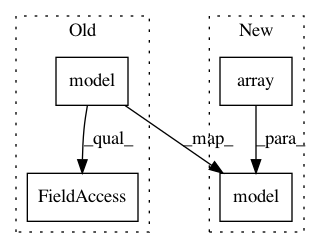

a6652b0c1997bb47dd502bf674e0b3b9b2d09d23,examples/reinforcement_learning/tutorial_cartpole_ac.py,Actor,choose_action,#Actor#Any#,129
Before Change
def choose_action(self, s):
// probs = self.sess.run(self.acts_prob, {self.s: [s]}) // get probabilities of all actions
_logits = self.model([s]).outputs
_probs = tf.nn.softmax(_logits).numpy()
return tl.rein.choice_action_by_probs(_probs.ravel())
def choose_action_greedy(self, s):
After Change
return _exp_v
def choose_action(self, s):
_logits = self.model(np.array([s]))
_probs = tf.nn.softmax(_logits).numpy()
return tl.rein.choice_action_by_probs(_probs.ravel()) // sample according to probability distribution
def choose_action_greedy(self, s):
In pattern: SUPERPATTERN
Frequency: 4
Non-data size: 4
Instances
Project Name: tensorlayer/tensorlayer
Commit Name: a6652b0c1997bb47dd502bf674e0b3b9b2d09d23
Time: 2019-05-16
Author: 1402434478@qq.com
File Name: examples/reinforcement_learning/tutorial_cartpole_ac.py
Class Name: Actor
Method Name: choose_action
Project Name: tensorlayer/tensorlayer
Commit Name: a6652b0c1997bb47dd502bf674e0b3b9b2d09d23
Time: 2019-05-16
Author: 1402434478@qq.com
File Name: examples/reinforcement_learning/tutorial_cartpole_ac.py
Class Name: Critic
Method Name: learn
Project Name: tensorlayer/tensorlayer
Commit Name: a6652b0c1997bb47dd502bf674e0b3b9b2d09d23
Time: 2019-05-16
Author: 1402434478@qq.com
File Name: examples/reinforcement_learning/tutorial_cartpole_ac.py
Class Name: Actor
Method Name: learn
Project Name: tensorlayer/tensorlayer
Commit Name: a6652b0c1997bb47dd502bf674e0b3b9b2d09d23
Time: 2019-05-16
Author: 1402434478@qq.com
File Name: examples/reinforcement_learning/tutorial_cartpole_ac.py
Class Name: Actor
Method Name: choose_action_greedy